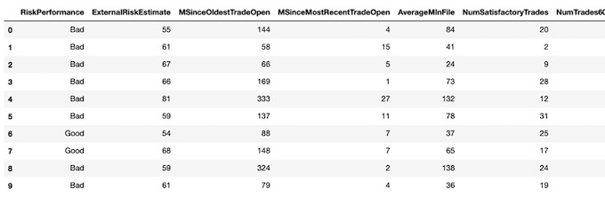
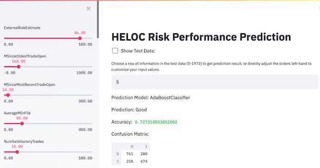

HELOC Risk Prediction using Machine Learning

Summary
- Goal:
Develop a predictive model and a decision support system (DSS) that evaluates the risk of Home Equity Line of Credit (HELOC) applications - Data:
An anonymized dataset of HELOC applications made by real homeowners, provided by FICO - Methodology:
- Use Maching Learning approch to build a predictive model to assess credit risk, models tested including Logistic Regression, Decision Trees, Random Forest, KNN, Linear Discriminant Analysis(LDA), BaggingClassifier, AdaBoostClassifier.
- Design and develop a running prototype of an interactive interface that sales representatives in a bank/credit card company can use to decide on accepting or rejecting applications.
Scenario
In the financial domain, credit risk assessment has become an important decision process in management activity. Used for the assessment of credit processes, credit scoring model includes statistical procedures used to classify customers. Consumers who are classified into bad class have a high risk of default and consumers who are classified into good class have a low risk of default.
The scores are designed to predict the likelihood of repayment of a loan, and customers can get explanations for their scores, e.g. “The proportion of your revolving balances to total balances is too high”. Regulators require that financial institutions provide reasons to customers when taking “adverse action” or in customer service settings when responding to customer inquiries.
In this project, my goal was to create machine learning models with both high accuracy and explainability using real- world financial datasets provided by FICO. Regulators and end-users would both benefit from more interpretable and explainable algorithms, including information about which variables or examples are particularly important, the logic used by an algorithm, and characterize input/output relationships between variables and predictions.
Data Description
The dataset is an anonymized dataset of Home Equity Line of Credit (HELOC) applications made by real homeowners. A HELOC is a line of credit typically offered by a bank as a percentage of home equity (the difference between the current market value of a home and its purchase price). The customers in this dataset have requested a credit line in the range of $5,000 - $150,000.
In the dataset, RiskPerformance is the target binary variable we want to predict. The label “Good” indicates that they have made their payments without ever being more than 90 days overdue. Whereas “Bad” indicates that a consumer was 90 days past due or worse at least once over a period of 24 months from when the credit account was opened. All the other predictor variables are quantitative or categorical variables coming from anonymized credit bureau data, most of them have monotonicity constraints (with respect to probability of bad = 1), each represents a specific kind of trade feature of the homeowners. Besides, it’s worth noting that there are three kinds of special values in the dataset, which means -9: No Bureau Record or No Investigation/ -8: No Usable/Valid Trades or Inquiries/ -7: Condition not Met (e.g. No Inquiries, No Delinquencies) respectively.
Data Cleaning
Data cleaning is the process of detecting and correcting (or removing) irrelevant, incomplete or inaccurate records from a dataset before building the model. First of all, I use describe() and info() to explore the whole data and find out that this dataset has no incorrect, duplicate or irrelevant values. All the observations have been carefully classified and unified, including different kinds of missing or unknown data. So through several attempts, I compare the results of each kind of handling method and decide to only drop rows with ‘-9’ and leave ‘-8’ and ‘-7’ in the dataset. Also, I convert the target variable from string value to Boolean value, in order to let all the models I use easily identify and classify these two labels. At last, I use get_dummies() to deal with categorical features, putting different categories of one predictor in different columns works better in machine learning methods.
##### Data Cleaning #####
# drop rows with all '-9'
Data = Data.replace(-9,np.nan)
Data = Data.dropna(axis=0)
# deal with categorical variables
Data = pd.get_dummies(Data, columns=['MaxDelq2PublicRecLast12M'], drop_first=False)
Data = pd.get_dummies(Data, columns=['MaxDelqEver'], drop_first=False)
# convert the target variable to boolean
Data['RiskPerformance'] = Data['RiskPerformance'].replace("Bad",0)
Data['RiskPerformance'] = Data['RiskPerformance'].replace("Good",1)Model Building & Model Selection
1. Logistic Regression
First, I try logistic regression to predict the consumers’ Risk Performance, logistic regression is widely used to predict the credit grade in bank, logistic regression is a kind of generalized linear model but it can predict discontinuous variables.
##### Create train set, test set #####
from sklearn.linear_model import LogisticRegression
from sklearn.tree import DecisionTreeClassifier
from sklearn import tree
from sklearn import neighbors
from sklearn.discriminant_analysis import LinearDiscriminantAnalysis
from sklearn.ensemble import BaggingClassifier
from sklearn.ensemble import RandomForestClassifier
from sklearn.ensemble import AdaBoostClassifier
from sklearn.model_selection import train_test_split
from sklearn.model_selection import cross_val_score
from sklearn.model_selection import GridSearchCV
from IPython.display import Image
from IPython.display import IFrame
train_set, test_set = train_test_split(Data, test_size=0.2, random_state=1)
train_set.reset_index(drop=True, inplace=True)
test_set.reset_index(drop=True, inplace=True)
train_set.to_csv('TrainData.csv',index=False)
test_set.to_csv('TestData.csv',index=False)
print(train_set.shape, test_set.shape)
X = train_set.copy().drop("RiskPerformance", axis=1)
Y = train_set["RiskPerformance"].copy()
X_test = test_set.copy().drop("RiskPerformance", axis=1)
Y_test = test_set["RiskPerformance"].copy()
##### 1. Logistic Regression #####
lin_reg = LogisticRegression()
scores = cross_val_score(lin_reg, X, Y, cv=10)
print("Train Set Accuracy:", scores.mean())
clf = lin_reg.fit(X, Y)
print("Test Set Accuracy:",clf.score(X_test, Y_test))The training accuracy of logistic Regression is 0.733 and the test accuracy is 0.719.
2. Decision Tree Classifier
Decision Tree Classifier is a useful model to classifier the data. I did the hyper-parameter tuning first, and I found the best value of max_depth is 5 and the best value of max_features is 12. Then I use these two value to build a decision tree classifier model.
The accuracy of training data set is 0.714 and the accuracy of test data set is 0.705.
##### 2.Decision Tree Classifier #####
param_grid = [{'max_depth':[3,5,7,9,11],'max_features':[2,4,6,8,10,12]}]
tree_clf = DecisionTreeClassifier(random_state=1)
grid_search = GridSearchCV(tree_clf, param_grid, cv=5)
grid_search.fit(X,Y)
print(grid_search.best_params_)
print("Train Set Accuracy:", grid_search.best_score_)
best_tree_clf = grid_search.best_estimator_
print("Test Set Accuracy:",best_tree_clf.score(X_test,Y_test))3. Random Forest Classifier
Random Forest Classifier is also a useful model to classifier the data. As in the decision tree classifier, I did hyper-parameter tuning to make the model more accurate. The best value of max_features is 4 and the best n_estimators is 90.
The accuracy of training data set is 0.7363 and the accuracy of test data set is 0.713.
##### 3. Random Forest Classifier #####
param_grid = [{'n_estimators':[70,80,90,100],'max_features':[2,4,6,8,10]}]
rf_clf = RandomForestClassifier(random_state=1)
grid_search = GridSearchCV(rf_clf, param_grid, cv=4)
grid_search.fit(X,Y)
print(grid_search.best_params_)
print("Train Set Accuracy:", grid_search.best_score_)
best_rf_clf = grid_search.best_estimator_
print("Test Set Accuracy:",best_rf_clf.score(X_test,Y_test))4. KNN
KNN is the simplest way to do classifier in machine learning. It’s classified by measuring the distance between different observations. I did hyper-parameter tuning and found that the best value of n_neighbors is 30.
The accuracy of training data set is 0.706 and the accuracy of test data set is 0.688.
##### 4. KNN #####
param_grid = [{'n_neighbors':[5,10,20,25,30,40]}]
knn_clf = neighbors.KNeighborsClassifier()
grid_search = GridSearchCV(knn_clf, param_grid, cv=5)
grid_search.fit(X,Y)
print(grid_search.best_params_)
print("Train Set Accuracy:", grid_search.best_score_)
best_knn_clf = grid_search.best_estimator_
print("Test Set Accuracy:",best_knn_clf.score(X_test,Y_test))5. Linear Discriminant Analysis
LDA is a classification model that can handle multiple category problems efficient. The key point of Discriminant Analysis is to assume that Class K has k different distribution, then calculate the conditional Bayes Rule for class X, and then select the class with the highest conditional probability. After hyper-parameter tuning, I found the best value of n_components is 2.
The accuracy of training data set is 0.733 and the accuracy of test data set is 0.719.
##### 5. LDA #####
param_grid = [{'n_components':[2,4,6,8,10]}]
lda_clf = LinearDiscriminantAnalysis()
grid_search = GridSearchCV(lda_clf, param_grid, cv=5)
grid_search.fit(X,Y)
print(grid_search.best_params_)
print("Train Set Accuracy:", grid_search.best_score_)
best_lda_clf = grid_search.best_estimator_
print("Test Set Accuracy:",best_lda_clf.score(X_test,Y_test))6. BaggingClassifier based on decision tree classifier
Bagging is an Integration method to do the classification and prediction, it can combine the prediction results of multiple base machine learning method to improve the generalization ability of a single model. When building this model, I use cross-validation to improve the accuracy of the training dataset. Also I want to find the best value of n_estimator to make this model predict the RiskPerformance more accurately. I set the n_estimator ranges from 1 to 100, and the best value of n_estimator is 69. Then I use this number to build a bagging classifier model, the accuracy of training data is 0.733, since I use cross-validation to calculate the accuracy of the training data.
The accuracy increases significantly: the accuracy of test data set is 0.718
##### 6.BaggingClassifier #####
tree_depth = 5
base_clf = tree.DecisionTreeClassifier(max_depth=tree_depth) # base classifier
results = []
n_range = range(1,100,1)
for n in n_range:
clf_bagging = BaggingClassifier(n_estimators=n, base_estimator=base_clf)
scores = cross_val_score(clf_bagging, X, Y, cv=5)
results.append((n,scores.mean(), scores.std()))
df_bagging = pd.DataFrame(data=results,columns=['n','Bagging accuracy','Bagging error'])
df_bagging
print(df_bagging['Bagging accuracy'].argmax()+1,df_bagging['Bagging accuracy'].max())
# run bagging model in the entire train set
best_bag_clf = BaggingClassifier(n_estimators=59, base_estimator=base_clf)
clf = best_bag_clf.fit(X, Y)
print("Test Set Accuracy:",clf.score(X_test,Y_test))7. AdaBoostClassifier
AdaBoostClassifier a Boosting algorithm. Boosting is the process of upgrading "weak learning algorithm" to "strong learning Algorithm" , inputting the sample data to the initial “weak learner”, generally “weak learner” is decision tree algorithm, then updating the weight of the sample through the deviation of the weak learner, the more difference the weight of the sample increases, and then repeating the previous step to get the “strong learner”. Since the tree- based adaboostclassifier has two main hyper-parameters, I want to tune hyper-parameters to get the best value of these parameters and then have a better model, I set n_estimators ranges from 1 to 100, and then I find that the best value of n_estimators is 98. For the learning_rate parameter, I found that the value of 0.5 would generate the highest prediction accuracy. I also use cross-validation to do calculate accuracy of training data set.
The accuracy is 0.736 and the accuracy of test data set is 0.727.
##### 7. AdaBoostClassifier #####
res_boosting_mean = []
res_boosting_std = []
n_range = range(1,100,1)
for n in n_range:
clf_boosting = AdaBoostClassifier(n_estimators=n, learning_rate=0.5)
clf_boosting_scores = cross_val_score(clf_boosting, X, Y, cv=5)
res_boosting_mean.append(clf_boosting_scores.mean())
res_boosting_std.append(clf_boosting_scores.std())
df_boosting = pd.DataFrame({'Boosting accuracy':res_boosting_mean,'Boosting error':res_boosting_std},index=n_range)
df_boosting
df_boosting["Boosting accuracy"].plot(title = 'Boosting accuracy', x = 'n_estimators', y = 'accuracy')
print(df_boosting['Boosting accuracy'].argmax(),df_boosting['Boosting accuracy'].max())
## run boost model in the entire train set
best_boost_clf = AdaBoostClassifier(n_estimators=98, learning_rate=0.5)
clf = best_boost_clf.fit(X, Y)
print("Test Set Accuracy:",clf.score(X_test,Y_test))Model Selection
Since the AdaBoostClassifier has the highest accuracy, I choose this model as the final model. Furthermore, the differences of our observations are very small, boosting can adjust these differences according to other features, which is very useful to our result.
Result & Interface
Considering the technical proficiency of the user, I designed and developed a running prototype of an interactive interface that sales representatives in a bank/credit card company can use to decide on accepting or rejecting applications.
The interface has the following characteristics:
- The users can choose which row of test data they want to predict and get the prediction result.
- The users can see the value of every feature in the left sidebar, and customize the feature inputs by adjusting the sliders to get a new prediction result and to explore how different features can affect the prediction.
- The users can visualize and understand the unstructured data.
- The users can see the overall test accuracy and confusion matrix of the model.
Final Report
Key Words: Python, Machine Learning, Logistic Regression, Decision Trees, Random Forest, KNN, LDA, Interactive Interface